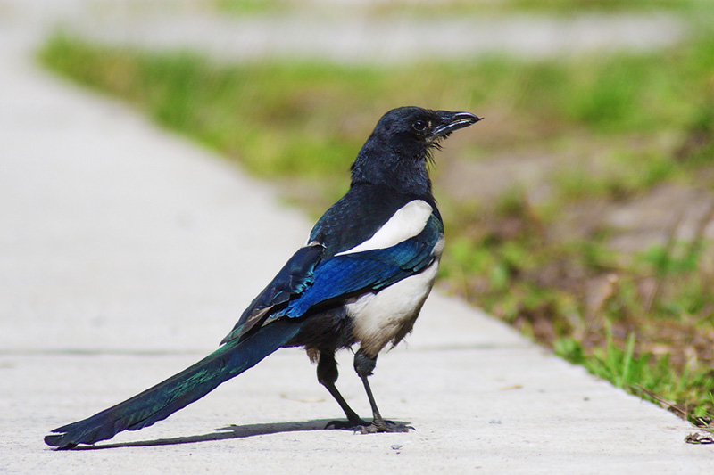

This article is about the birds in the family Corvidae. For the black and white bird often referred to by English speakers simply as 'Magpie', see Eurasian Magpie. For the Australasian bird in the family Cracticidae, see Australian Magpie. For other uses, see Magpie (disambiguation).
According to analysis, magpies do not form the monophyletic group they are traditionally believed to be a long tail has certainly elongated (or shortened) independently in multiple lineages of corvid birds. Among the traditional magpies, there appear to be two distinct lineages: one consists of Holarctic species with black/white colouration and is probably closely related to crows and Eurasian jays. The other contains several species from South to East Asia with vivid colouration which is predominantly green or blue. The Azure-winged Magpie is a species with a most peculiar distribution and undear relationships. It may be the single survivor of a long extinct group of corvid genera.
Other research has cast doubt on the taxonomy of the Pica magpies, since it appears that P. hudsonia and P. nuttalli may not be different species, whereas the Korean race of P. pica is genetically very distinct from the other Eurasian (as well as the North American) forms. Either the North American, Korean, and remaining Eurasian forms are accepted as three or four separate species, or there exists only a single species, Pica pica.
See magpie on Wikipedia